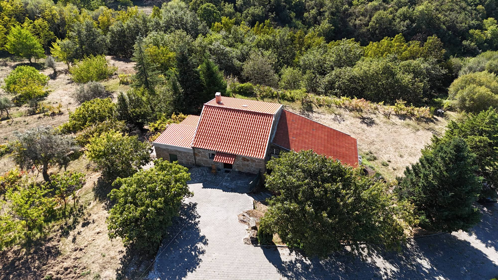
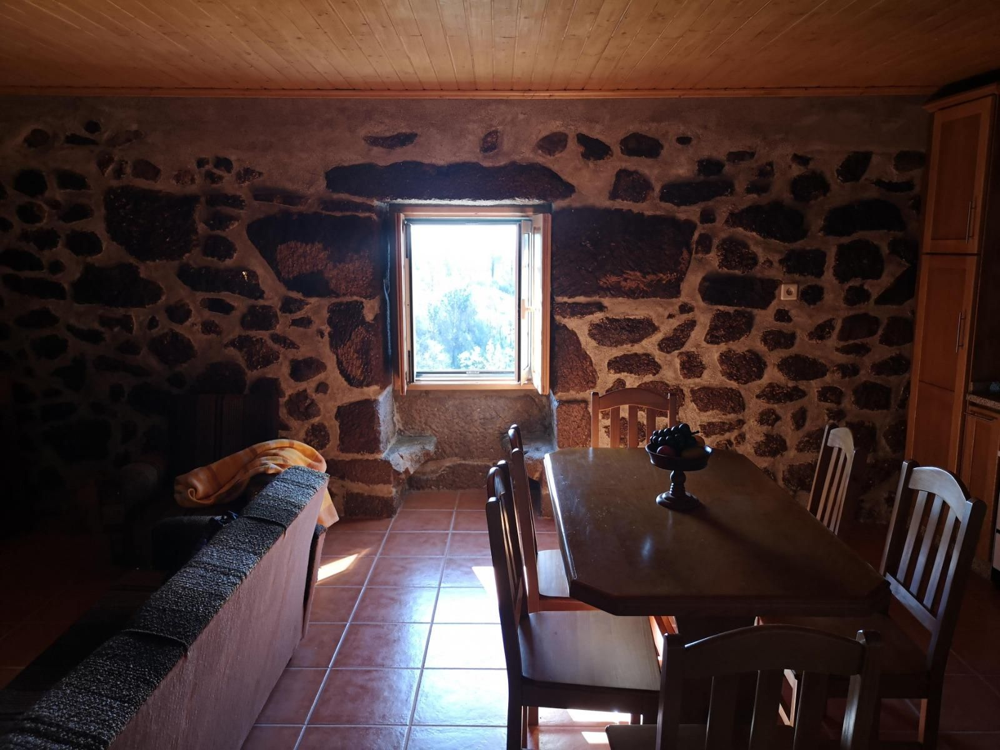
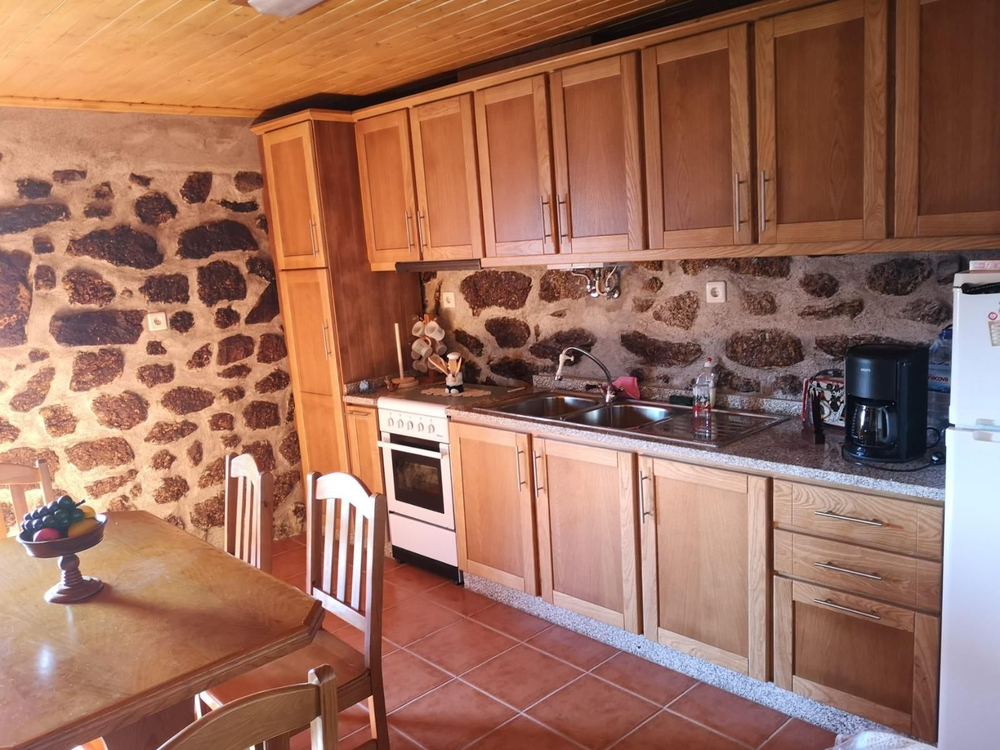
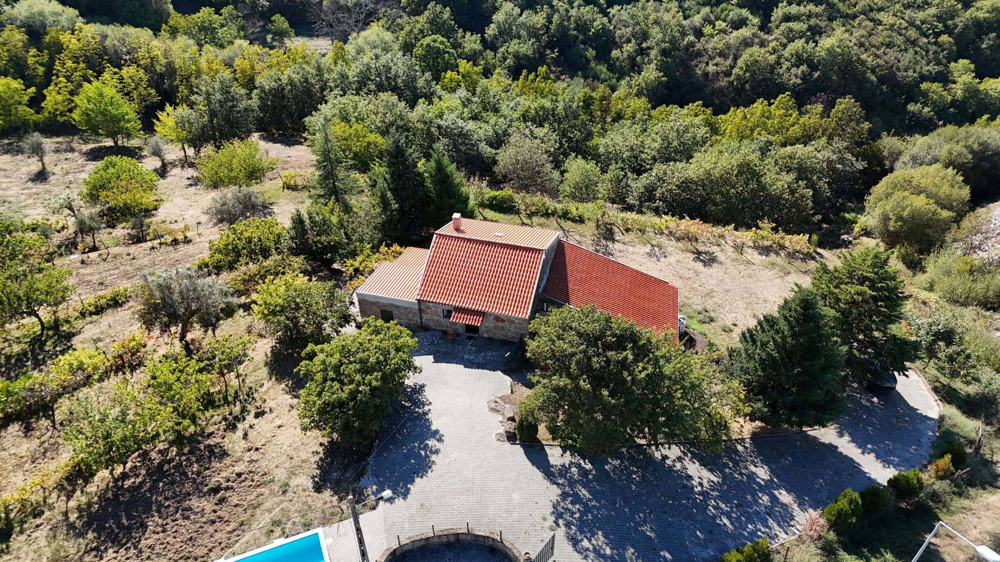

Quinta de Santa Guilha
Casa de granito e cinco hectares de olival, vinha e pomar em Gouveia, na encosta da Serra da Estrela.
Uma casa de granito na encosta de Gouveia
A Quinta de Santa Guilha fica na vertente noroeste da Serra da Estrela, com vista aberta sobre o vale do Mondego. São cinco hectares de olival, vinha, pomar e nogueiral à volta de uma casa tradicional de granito.
Foi a casa de três gerações da família Loureiro. Aqui se cresceu, se trabalhou a terra e se guardaram muitas histórias. A casa foi remodelada com cuidado para receber quem quer passar uns dias no campo, com a serra à porta.
A casa
Paredes de pedra à vista, tetos forrados a madeira e chão de tijoleira. A remodelação trouxe o conforto de hoje sem apagar o que a casa tinha de antigo.
Na sala, a janela conserva as namoradeiras: os dois bancos de granito, um de cada lado, onde antigamente se conversava e costurava à luz do dia.
- Sala com lareira de granito
- Cozinha equipada com forno, placa e frigorífico
- Mesa de jantar para toda a família
- Pátio de lajes à entrada
- Estacionamento privado dentro da quinta


Cinco hectares de terra
À volta da casa há olival, vinha, pomar e um nogueiral plantado para dar madeira nobre. Junto ao pátio crescem figueiras, e as árvores de fruto vão dando colheita ao longo do ano.
É uma quinta trabalhada há três gerações, com espaço para passear entre as árvores, provar a fruta da época e ver o sol pôr-se sobre o vale.

O ano na quinta
Cada mês traz um trabalho diferente na terra. As barras mostram as horas de luz em Gouveia a meio de cada mês. Escolha um mês para ver o que acontece.
Setembro
Este mês
Vindima
Apanham-se as uvas da vinha e os últimos figos. A luz do fim da tarde sobre o vale é das mais bonitas do ano.
12h24 de luz por dia, a meio do mês.
Em volta da quinta
Gouveia é uma das portas do Parque Natural da Serra da Estrela. Daqui sobe-se ao planalto e às lagoas, e descem-se as estradas até às aldeias de granito.
À mesa, há queijo da Serra da Estrela, borrego e vinho do Dão.
-
Centro de Gouveia
Museu Abel Manta, jardins e restaurantes
5 min
-
Linhares da Beira
Aldeia histórica com castelo medieval
20 min
-
Folgosinho
Aldeia serrana de casas de granito
20 min
-
Vale do Rossim
Lagoa com praia fluvial, a mais de 1400 metros
30 min
-
Manteigas
Vila no vale glaciar do Zêzere
45 min
-
Torre
O ponto mais alto de Portugal continental
1 h
Tempos aproximados de carro a partir da quinta.
Galeria
Reservar
Diga-nos as datas e quantas pessoas vêm. Respondemos com a disponibilidade e o preço para a sua estadia.